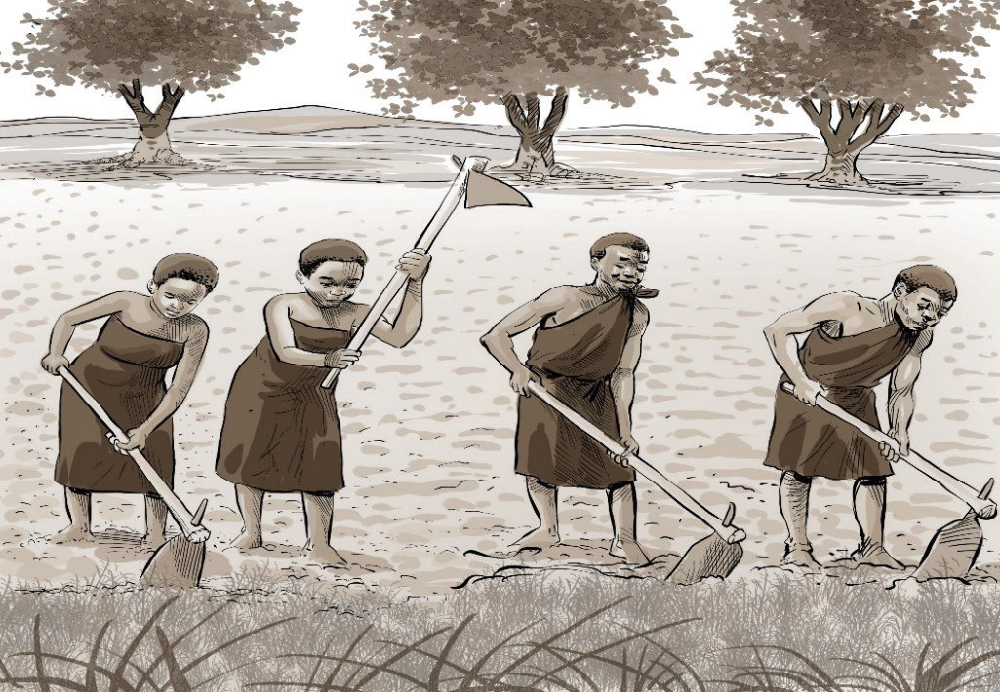

Ujio wa Waarabu ulileta mabadiliko makubwa katika mfumo wa kiutamaduni na kijamii. Ujio wao ulichochea mabadiliko makubwa katika maadili ambayo ni dini ya Kiislamu na biashara ya utumwa. Dini ya Kiislamu, kama dini nyingine, ina maadili na kanuni zake. Uislamu uliwataka wale Waafrika waliotaka kuwa Waislamu, kuacha mila na desturi zao na kufuata utamaduni wa Kiislamu.
Uislamu kama dini, ulihimiza taratibu ambazo kwa kiasi kikubwa zilikuwa sawa na za Kiafrika. Uislamu kama dini za jadi, uliruhusu ndoa za wake wengi. Kama ilivyo kwa Waislamu, kwa Waafrika pia, ndoa ilikuwa ndio taasisi ya mwanzo ya jamii. Hata taratibu za ndoa hazikuwa tofauti sana. Kwa mfano, katika Uislamu ilikuwa hairuhusiwi kwa wazazi kumtoa binti kama bidhaa, yaani kumchukua tu bila maridhiano ya wahusika na familia zao. Utaratibu wa kutoa mahari pia ulikuwa sawa na Wakiafrika, isipokuwa katika Uislamu mahari ilikuwa ya binti